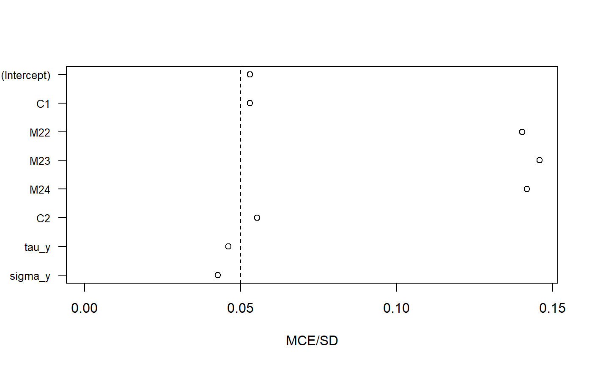

Calculate and plot the Monte Carlo error of the samples from a JointAI model.
MC_error(x, subset = NULL, start = NULL, end = NULL, thin = NULL, digits = 2, warn = TRUE, ...) # S3 method for MCElist plot(x, scaled = TRUE, plotpars = NULL, ablinepars = list(v = 0.05), ...)
| x | object inheriting from class "JointAI" |
|---|---|
| subset | subset of parameters/variables/nodes (columns in the MCMC sample).
Uses the same logic as the argument |
| start | the first iteration of interest (see |
| end | the last iteration of interest (see |
| thin | thinning interval (see |
| digits | number of digits for output |
| warn | logical; should warnings be given? Default is
|
| ... | Arguments passed on to
|
| scaled | use the scaled or unscaled version, default is |
| plotpars | optional; list of parameters passed to |
| ablinepars | optional; list of parameters passed to |
An object of class MCElist with elements unscaled,
scaled and digits. The first two are matrices with
columns est (posterior mean), MCSE (Monte Carlo error),
SD (posterior standard deviation) and MCSE/SD
(Monte Carlo error divided by post. standard deviation.)
plot: plot Monte Carlo error
Lesaffre & Lawson (2012) [p. 195] suggest the Monte Carlo error of a parameter should not be more than 5% of the posterior standard deviation of this parameter (i.e., \(MCSE/SD \le 0.05\)).
Lesaffre, E., & Lawson, A. B. (2012). Bayesian Biostatistics. John Wiley & Sons.
The vignette Parameter Selection
contains some examples how to specify the argument subset.
#>MC_error(mod)#> est MCSE SD MCSE/SD #> (Intercept) 2911.26 85.980 1987.53 0.043 #> C1 -2005.84 59.189 1368.15 0.043 #> M22 -0.40 0.049 0.65 0.075 #> M23 0.12 0.042 0.65 0.066 #> M24 -1.16 0.054 0.71 0.076 #> C2 2.82 0.109 2.24 0.049 #> sigma_y 2.24 0.010 0.16 0.062